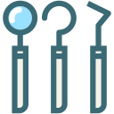

安心の医療機器・歯科素材


秋葉原駅
徒歩3分
千代田区秋葉原の「中川歯科クリニック」は、予防と精密な治療に力を入れている歯医者です。すべての患者様に安心・確実な治療を受けていただけるよう、専門の設備や機器を備え、日々進化する歯科技術を積極的に採用しています。こちらでは、そんな当院がこだわっている取り組み・院内環境づくりについてご紹介します。
CT、レントゲン撮影
従来のレントゲンに比べ、被ばく量が大幅に抑えられたヨーロッパ規格のドイツ製歯科用CT（顎の骨量や血管・神経の位置を3次元画像で把握できる撮影機器）を使用しています。患者様のお口の状態を正確に把握し、正確な治療前診断に役立てています。

歯科用顕微鏡
脳外科などでも用いられる、手術用の高性能マイクロスコープを導入しています。肉眼では見ることのできない口腔内の細部まで拡大視野で確認できるので、精密な治療や治療時間の短縮などに貢献してくれます。
滅菌器
院内感染防止のため、徹底した除菌・滅菌システムを完備しています。オートクレーブや高速高圧滅菌器、ガス滅菌器などを使用し、安全な院内環境にこだわっています。
手術用空気清浄ユニット
手術室の天井には、「クリーンエリアプラス」と呼ばれる手術用空気清浄ユニットを取りつけています。「清浄度クラス10,000」の清潔で安全な環境をつくりだすために、欠かせない設備です。
歯周病菌の検査
位相差（光線の波長などの違い）をコントラストに変更して最近の種類や量を特定する顕微鏡です。口腔内の細菌検査に使用することで、歯周病菌や虫歯菌などを効果的に除去できます。ご希望の患者様には、ご自身の口腔内状況をご覧いただくことも可能です。

補綴治療
「セレック4.2」は、IT部品など超精密工業製品の製造に用いられているCAD/CAMを歯科医療に応用したマシンです。これまで1週間から10日程度かかっていたセラミックの詰め物や被せ物の作製が、セレックによって最短1日で可能になりました。
殺菌水の生成
当院では、診療チェアの給水ユニットから治療時に使用する、うがいの水、手洗いの水に至るまで、全て身体に安全な殺菌水を使用できるエピオスエコシステムを導入しています。洗浄・殺菌の2つの機能を持つエピオス（POIC）ウォーターは、バイオフィルム・プラークを分解・洗浄した後に殺菌力がUPする優れた歯科治療水です。
エピオスエコシステムについて| 診療時間 | 月 | 火 | 水 | 木 | 金 | 土 | 日(祝) |
|---|---|---|---|---|---|---|---|
| 9:30 〜 13:00 | ◯ | ◯ | ◯ | ー | ◯ | ◯ | ー |
| 14:00 〜 19:00 | ◯ | ● | ◯ | ー | ● | △ | ー |
● … 14:00 〜 18:00 △ … 14:00 〜 16:00 の診療時間になります。
● … 14:00 〜 18:00
△ … 14:00 〜 16:00 の診療時間になります。